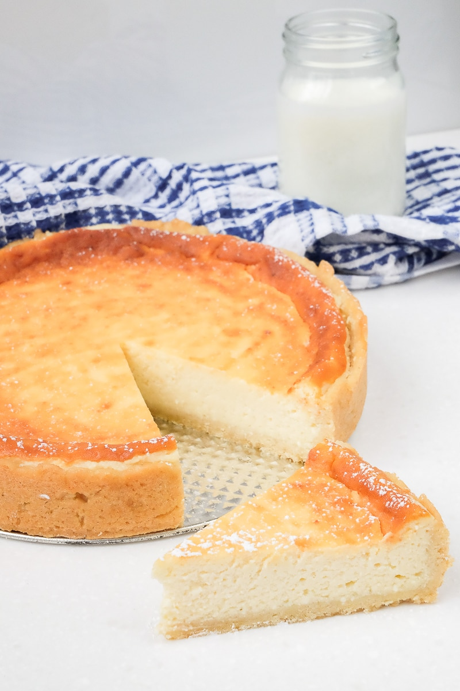

German Cheesecake

Description
My mom searched for years for an authentic German cheesecake recipe, but Germans use quark, an ingredient not readily available in the United States.
This recipe uses cottage cheese in place of quark and makes its own crust while baking.
Ingredients
- 1½ cups white sugar
- 2 tablespoons cornstarch
- 3 tablespoons all-purpose flour
- 2 (8 ounce) packages cream cheese, softened
- 1 pound small curd cottage cheese
- ½ cup butter, softened
- 4 medium eggs
- 1½ tablespoons lemon juice
- 1 teaspoon vanilla extract
Steps
- Preheat the oven to 350 degrees F (175 degrees C). Grease the bottom and halfway up the sides of a 9-inch springform pan.
- Mix together sugar, cornstarch, and flour; set aside.
- Combine cream cheese and cottage cheese; beat with an electric mixer at high speed until smooth and fluffy. Beat in softened butter. Gradually add sugar mixture, beating until combined.
- Add eggs one at a time, blending well and scraping down the bowl after each addition. Stir in lemon juice and vanilla and mix just until smooth. Pour batter into the prepared pan.
- Bake in the preheated oven for 1 hour and 10 minutes.
- Turn off the oven; let cheesecake rest in the oven with the door closed for 2 hours. Remove and cool on a wire rack. Chill for 4 hours or overnight.